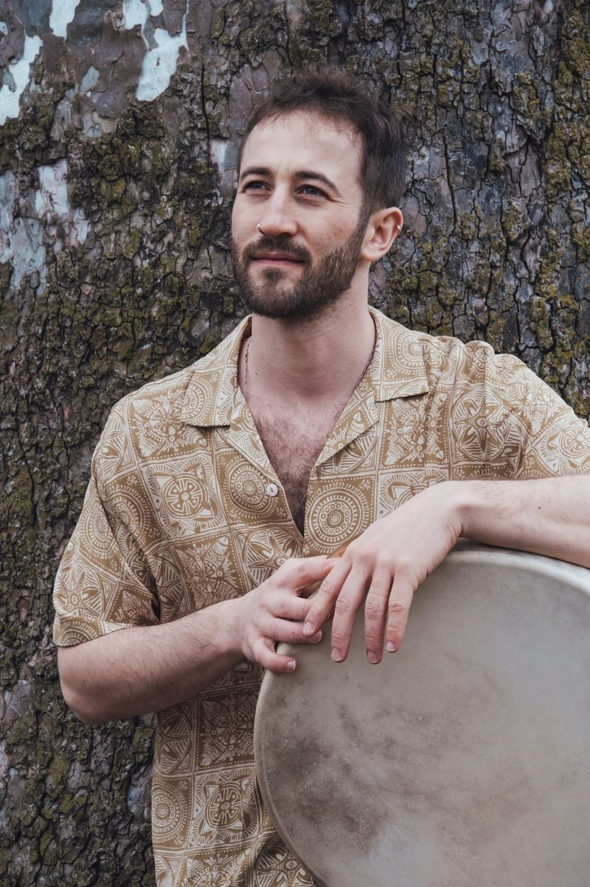

About Nadav
Percussionist, drummer, composer and educator, at home in the rhythms of the Middle East, Africa, Latin America and jazz.
“This knowledge and experience is not mine. I’m merely a vessel to transport it to future generations.”nadav friedman
Nadav Friedman is a percussionist, drummer, composer and educator whose music moves between the rhythms of the Middle East, North and West Africa, Latin America and jazz. He plays frame drums, darbuka, riq and drum set, and brings the language of traditional percussion into the open, improvised space of the kit.
Born in Ramat Gan in 1992 and raised in Hod Hasharon, Nadav started on drum set at thirteen. After serving in the IDF's Maglan unit and spending several years travelling and volunteering across the Americas, he returned to music full time in 2014: first at the Rimon School, then at the Jerusalem Academy of Music and Dance, where he studied jazz performance and composition.
Jerusalem is where he found the North African roots of his own family's music. He became a founding member of HaMadrasa, the Andalusian orchestra led by Hagai Bilitsky, and formed the Soltz Trio with Lior Soltz and Tamir Klein. Both groups played major festivals in Israel and abroad, from the Jerusalem Jazz Festival to Australia.
During the pandemic he moved to Boston for a Master’s degree at the New England Conservatory, on scholarship and with the Dean’s Award. He soon became one of the busiest Middle Eastern percussionists in the Northeast, performing with artists including Danilo Pérez, Miguel Zenón, Donny McCaslin, Dave Holland, Ethan Iverson, Jason Moran and Arturo O’Farrill, recording for Hollywood productions, and giving masterclasses at the Panama Jazz Festival and in Costa Rica.
His debut album as a leader, Songs for Empathy (2023), gathers those years into one statement: original music of layered rhythms and warm melodies about empathy, compassion, fear and hope.
Since returning to Israel in 2023, Nadav has been at the centre of several groups. Playground Trio, with clarinetist Amitai Mann and guitarist Dor Ben Lulu, released its debut A Sign of Life in 2024. Bombaras brings Balkan and Gypsy music to dance floors from Jerusalem to Haifa. He plays in tar player Itai Armon’s Israeli-Persian ensemble and with singers David Lavi and Tamar Philosof. In December 2025 he created and directed Alma de Bata, a percussion celebration with Rony Iwryn and Itamar Gutman.
Teaching runs alongside all of it. Nadav teaches at the Kiryat Ono Conservatory, where he is also business manager, and at HaSadna Conservatory in Jerusalem, and he has written his own method, The Middle Eastern Drum Set.
Short bios
Nadav Friedman is an Israeli percussionist, drummer, composer and educator. Trained at the Jerusalem Academy of Music and Dance and the New England Conservatory, he brings Middle Eastern percussion into jazz drumming. He leads Songs for Empathy and Alma de Bata, and plays with Playground Trio, Bombaras and the Itai Armon Ensemble.
Nadav Friedman is an Israeli percussionist, drummer, composer and educator. He studied jazz at the Jerusalem Academy of Music and Dance and the New England Conservatory in Boston, and learned from traditional masters of Middle Eastern, African and Latin American percussion. A founding member of the Andalusian orchestra HaMadrasa and the Soltz Trio, he has performed with Danilo Pérez, Dave Holland, Donny McCaslin, Ethan Iverson and Jason Moran, and recorded for Hollywood productions. His debut album Songs for Empathy was released in 2023. Today he plays with Playground Trio, Bombaras, the Itai Armon Ensemble and David Lavi & Tamar Philosof, directs the percussion show Alma de Bata, and teaches at the Kiryat Ono and HaSadna conservatories.

